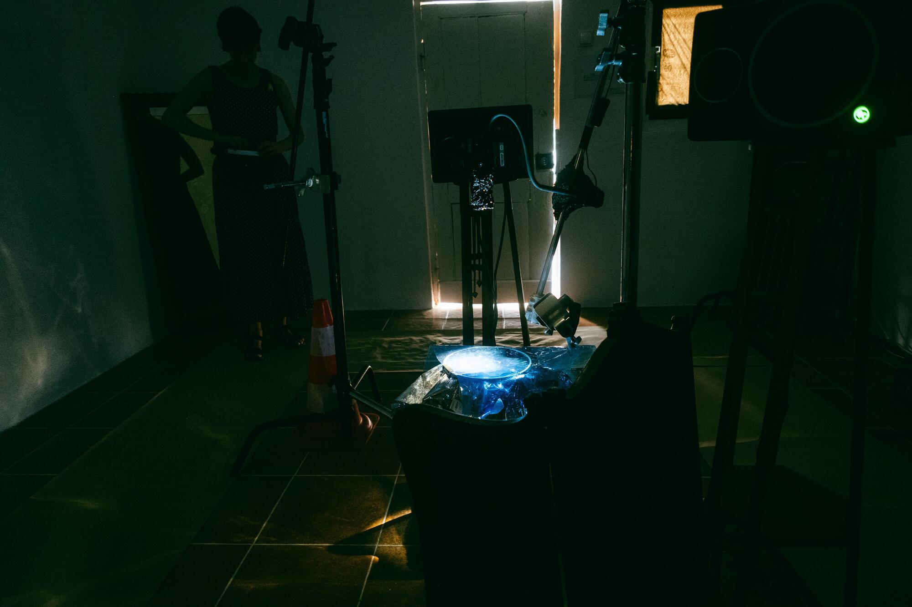
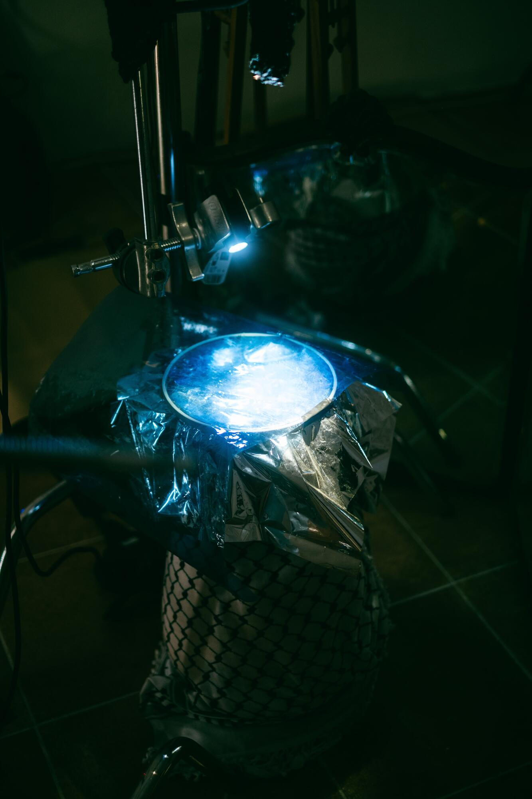
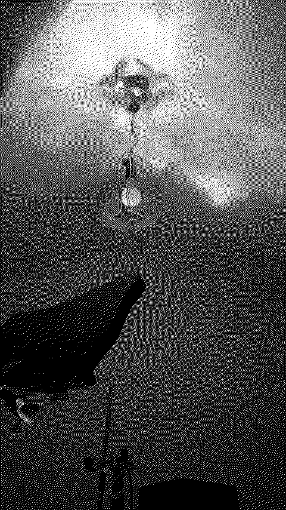
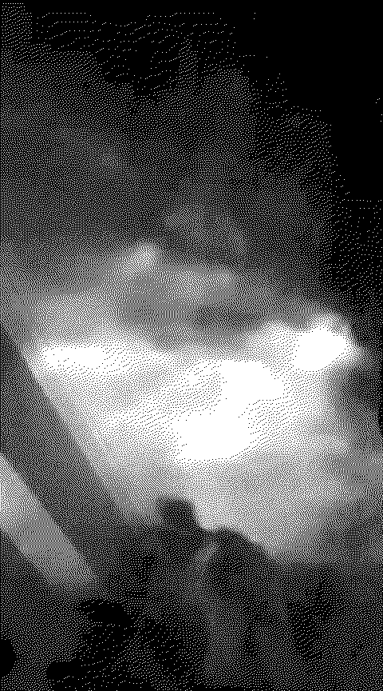
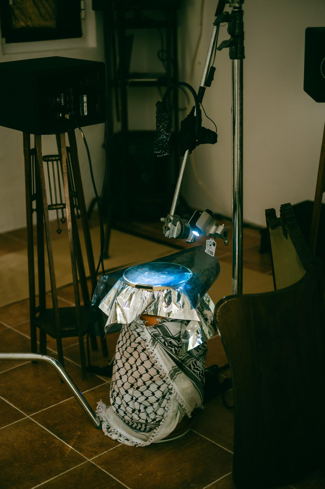
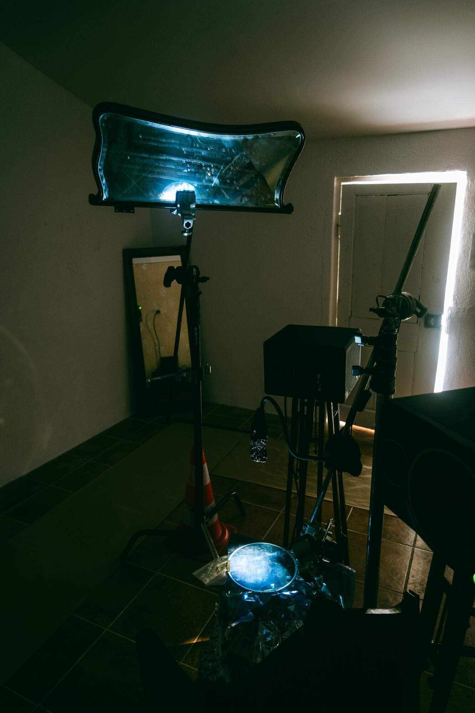
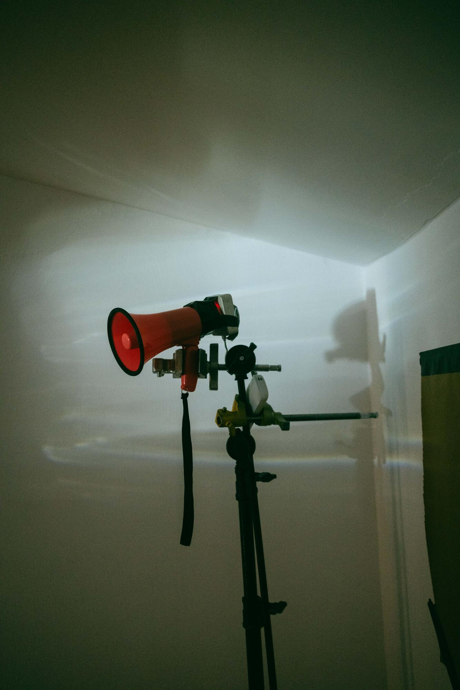
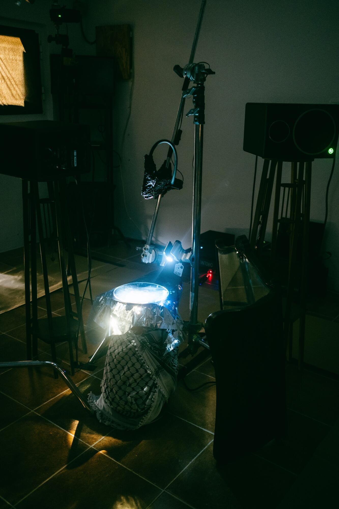
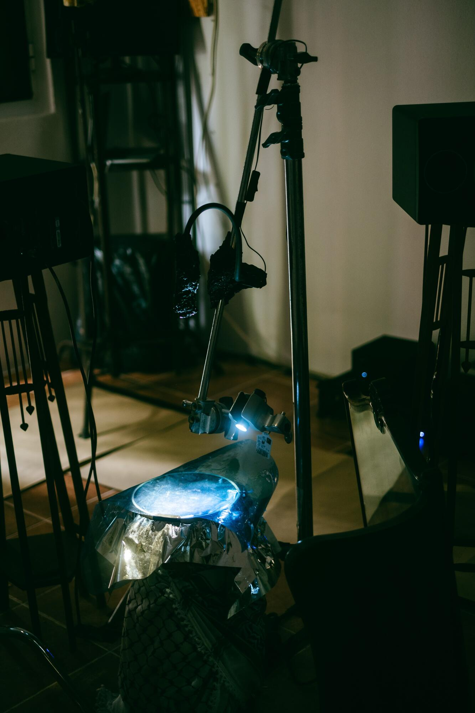

This article investigates the metaphor of the acoustic palimpsest as a tool for understanding how the layered, perceptually rich and meaningfully thick medium of sound interacts with experience. The palimpsest is a physical manuscript subjected to repeated inscription and imperfect erasure, where traces and residues cohabitate with fresh text. Sound, too, inspires this palimpsestic act of residual excretion, but unlike the fixed, textual palimpsest it is everywhere and nowhere, only accessible through what Bonnet terms "setups of apprehension."
In the specific context of installation art, I follow the pathway of sound as it appears, dissipates, and resonates. Due to the unstable nature of sound as a medium, I chose the visual medium of light to demonstrate the acoustic palimpsest in action. The final presentation of this piece, entitled
"i just need
an intimate room,
a metal stand
and
a small (but powerful) light"
took the form of an intermedia installation combining sculpture, light design and sound creation, in collaboration with sound artists João Sarantopoulos and Irazema Vera, to produce visual music, or as Judith Zilczer defines it: art in motion. This perceptual experience asks the audience to consider the "gaseous" and "evanescent," as Caleb Kelly and J. M. Daughtry would respectively say, nature of sound and the unique temporality, which David J. Kangas names the "indeterminate [or] unanticipatable," that it creates.
The work attempts to understand the acoustic palimpsest, not as a textual metaphor, but as an atmospheric metaphor which privileges aurality as a unique form of experience.
Sound is ordinarily understood as an effect — something produced by a source, travelling through a medium, arriving at a receiver. This paper begins from a different premise: that sound is a condition of possibility for the perception of space itself. What we hear shapes what we see, and what we feel determines how we understand our environment as meaningful.
The installation an intimate room emerged from a question about visibility. Can the act of amplifying sound into a space make that space disclose something it ordinarily withholds? Inside the room, an exposed subwoofer drives a crochet hoop stretched with mylar — a cheap, industrial, makeshift apparatus. A single light illuminates the membrane from above. As the surrounding installation's sound floods in, the mylar trembles, ripples, and refracts the light into moving patterns across the floor and walls.
What becomes visible in this trembling is not simply vibration. It is the meeting point between the cultural weight of the sounds — protest recordings from Lisbon and Peru, the rush of water — and the specific acoustic properties of the room in which they are played. The room, in this sense, is not a neutral container but an active participant.
This paper traces the theoretical lineage behind that claim, examines the case study in detail, and proposes directions for future research.
Michael Kelly's writing on sound art provides the foundational framework for this research. Kelly argues that sound in art does not merely add a temporal dimension to a spatial medium; it fundamentally transforms how that space is perceived. His claim that sound art "does not give us just the outline or contour of things — their size, shape and position — but also gives us the sense of their quality, or their relation to us: their texture, density, resistance, porosity, wetness, absorptiveness" (Kelly, 2011, p. 67) is central to understanding what an intimate room attempts.
This phenomenological position recasts the function of sound from descriptive to constitutive. Sound does not describe space; it produces the conditions under which space can be experienced as meaningful. The vibrating membrane in the installation makes this claim literal: it produces an image of sonic force that could not exist without the specific acoustic properties of this room, in this moment, receiving these sounds.
"Sound is doubly extramural: in a disciplinary sense, it adds to art a dimension that has traditionally been left to other, more temporal arts; secondly, in a more immediate or phenomenological sense, it introduces timely events into the permanent, partitioned world of art."
— Kelly, 2011, p. 66
Elias Canetti's Crowds and Power (1960) offers a complementary framework. Canetti's meditation on the sea as a model for collective voice — patient, persistent, made of many voices — directly informs Corrente de Vozes, the installation within which an intimate room was situated. His figure of the crowd as an organism with its own acoustic character — chant, percussion, the rhythmic repetition of collective action — maps onto the protest recordings distributed across the spatial audio system.
The use of protest recordings from Lisbon and Peru introduces a political dimension that the visual installation absorbs and refracts. The mylar membrane, shaking under the weight of collective voice, becomes a material register of political force — a body that responds to protest without representing it.
The concept of the palimpsest — a writing surface from which earlier text has been incompletely erased, leaving traces beneath new inscription — provides a useful metaphor for the sonic condition the installation explores. Every room carries acoustic memory: the residual reverb of previous sounds, the material properties that determine how sound behaves, the cultural associations that certain sounds activate.
An intimate room proposes the term acoustic palimpsest for this layered condition — the way a specific sound, played in a specific space, activates the room's material and cultural history. The membrane makes this layering briefly visible before the sound stops and the image dissolves.
An intimate room was developed as a visual component within Corrente de Vozes, a multi-channel sound installation created by João Sarantopoulos and Irazema Vera. The larger installation distributed recordings of protest from Lisbon and Peru alongside recordings of water — rivers, ocean, underwater environments — across six speakers arranged within the space.
The collaboration emerged from a shared interest in the relationship between water and collective voice, and between acoustic phenomena and political memory. João Sarantopoulos's compositional work explored the spatial distribution of these layered recordings — the way the audience could move through the sound field and create their own relationship between water and protest. My visual work responded to this sonic environment by creating a central apparatus that made the force of that environment visible.
Inside the room: a raw, exposed subwoofer connected to an amplifier driven by the output of the surrounding sound system. A crochet hoop cradles a sheet of thin mylar and ¼ CTB (Colour Temperature Blue) filter gel, resting on the circumference of the speaker so that the membrane sits directly above it. An industrial filmmaking stand holds two light sources — a cheap Chinese reading light and a battery-powered flashlight — aimed at the membrane from above.
Additional industrial stands support an array of Bluetooth speakers distributed around the room, projecting the protest and water recordings from several angles. One speaker points directly into a megaphone, further amplifying the cacophony. Two studio monitors push the low-frequency content of the water recordings, creating a physical pressure in the room.
As the sound builds, the mylar membrane begins to vibrate. The CTB gel introduces a cool blue cast to the light reflected from the moving surface. Patterns of rippling light appear on the floor, ceiling, and adjacent walls. The patterns shift with the frequency content of the sound — tighter under the high-frequency protest chants, slower and wider under the deep ocean recordings.
The installation realises Kelly's claim that sound gives us "the sense of quality" of things. The membrane does not represent the protest or the water; it responds to them. Its shaking is not metaphorical but indexical — a direct physical consequence of the acoustic pressure produced by the recordings. In this sense the installation asks whether visibility itself can be a form of listening.
The choice of materials — mylar, crochet hoop, cheap consumer lights — is deliberate. The apparatus is visibly improvised, makeshift, fragile. This fragility mirrors the fragility of the protest recordings themselves: voices that were raised in a specific historical moment, captured, and now replayed in a space that did not witness them. The membrane shakes because of sounds that originated elsewhere, in different bodies, in different rooms.
The keffiyeh draped around the base of the apparatus in some configurations of the installation introduces an explicit political material — one that carries its own layered cultural and historical associations. In those configurations, the shaking membrane sits above a symbol of resistance, and the blue light falls across both, connecting them without explaining the connection.
Several questions remain unresolved by this research and suggest directions for the second year of the programme.
The installation as presented was of fixed duration — the sound played, the membrane vibrated, the light patterns appeared and dissolved. A longer durational version raises the question of how the acoustic palimpsest accumulates over time. Does a room that has been subjected to hours of protest sound carry a different quality than one that has heard it for minutes? And if so, is that difference perceptible — to the body, to recording equipment, to the next sound that enters the space?
In the current work, the relationship between sound and material surface is one-directional: sound drives the membrane. A more complex version would explore reciprocity — how the material properties of the membrane and room alter the sound that passes through them. The crochet hoop introduces a specific pattern of dampening; the mylar reflects certain frequencies and absorbs others. Future work would make this reciprocal shaping audible as well as visible.
A single membrane responds to the totality of the sound field. A future installation might distribute multiple membranes of different sizes, materials, and orientations across the room — each responding differently to the same acoustic environment, producing a spatial map of the room's sonic topology.
The installation was developed for a specific room at Lusofona. The acoustic properties of that room — its dimensions, surface materials, the position of its doors and windows — are built into the work. Presenting the installation in a different room would produce a fundamentally different visual result. Future research would explore this site-specificity explicitly, developing documentation methodologies that capture not only what the membrane does but what the room's acoustic character is.
Altman, R. (Ed.). (1992). Sound theory, sound practice. Routledge.
Augoyard, J.-F., & Torgue, H. (Eds.). (2005). Sonic experience: A guide to everyday sounds (A. McCartney & D. Paquette, Trans.). McGill-Queen's University Press.
Benjamin, W. (1935). The work of art in the age of mechanical reproduction.
Blesser, B. (with Salter, L.-R.). (2007). Spaces speak, are you listening? Experiencing aural architecture. MIT Press.
Bonnet, F. J., & Mackay, R. (2018). The Order of Sounds. MIT Press.
Certeau, M. de. (1988). The practice of everyday life. University of California Press.
Chion, M. (1983). Guide to sound objects: Pierre Schaeffer and musical research. Institut National de l'Audiovisuel.
Daughtry, J. M. (2013). Acoustic palimpsests and the politics of listening. Music & Politics, 7(1).
Dillon, S. (2007). The palimpsest: Literature, criticism, theory. Continuum.
Erlmann, V. (2010). Reason and resonance: A history of modern aurality. Zone Books.
Geertz, C. (1973). The interpretation of cultures: Selected essays. Basic Books.
Howes, D. (Ed.). (1991). The varieties of sensory experience: A sourcebook in the anthropology of the senses. University of Toronto Press.
Ingold, T. (2000). The perception of the environment: Essays on livelihood, dwelling and skill. Routledge.
Jarrett, M. (n.d.). Sound doctrine: An interview with Walter Murch. web.archive.org →
Kangas, D. J. (2007). Kierkegaard's instant: On beginnings. Indiana University Press.
Langer, S. K. (1953). Feeling and form: A theory of art. Scribner.
Lukacs, G. (1967). History and class consciousness. Merlin Press.
Murch, W. (1995). In the blink of an eye. Silman-James Press.
Rancière, J. (2014). The emancipated spectator. Verso.
de Saussure, F. (1959). Course in general linguistics (C. Bally & A. Sechehaye, Eds.; W. Baskin, Trans.). The Philosophical Library. (Original work published 1916).
Sonnenschein, D. (2011). Sound spheres: A model of psychoacoustic space in cinema. The New Soundtrack, 1(1), 13–27.
Sterne, J. (2003). The audible past: Cultural origins of sound reproduction. Duke University Press.
Thompson, E. A. (2008). The soundscape of modernity: Architectural acoustics and the culture of listening in America, 1900–1933. MIT Press.
Wishart, T., & Emmerson, S. (2016). On sonic art (2nd ed.). Taylor and Francis.
Youngblood, G. (1970). Expanded cinema. E. P. Dutton.

About the work
An intermedia installation using light to recast a soundscape as a visible force — revealing the architectural component of sound production. It fuses the cultural memory of space with the echo-less imprint of captured and reproduced sound.
Inside the room, an amplifier connects to a raw, exposed subwoofer. A crochet hoop loosely cradles thin mylar and ¼ Colour Temperature Blue filter gel, resting on the circumference of the speaker. A strong, industrial filmmaking stand holds a cheap Chinese reading light and a battery-powered flashlight. The sounds of protest are amplified around this central altar.
Several industrial stands hold an array of bluetooth speakers projecting into the room from several angles. One speaker shouts directly into a megaphone, further amplifying the cacophony. A rush of waves pumps from two monitors placed next to the lights.

The central altar — mylar, CTB gel, crochet hoop on subwoofer


"does not give us just the outline or contour of things – their size, shape and position – but also gives us the sense of their quality, or their relation to us: their texture, density, resistance, porosity, wetness, absorptiveness."
— Kelly, 2011, p. 67


Context
Absorbing the sounds of the surrounding installation — Corrente de Vozes, a multi-channel work by João Sarantopoulos and Irazema Vera — an intimate room claims that sound is not a consequence of, but a pre-condition for, the revelation of essences within the environment. Sound instigates sight and uncovers hidden dimensions in the built environment.
"Sound is doubly extramural: in a disciplinary sense, it adds to art a dimension that has traditionally been left to other, more temporal arts; secondly, in a more immediate or phenomenological sense, it introduces timely events into the permanent, partitioned world of art."
— Kelly, 2011, p. 66

Megaphone on industrial stand — the cacophony projected upward

Video documentation
Spatial audio — Corrente de Vozes
Drag the listener to move through the space. The volume and panning of each channel shifts as you move — approximating the spatial distribution of the six-speaker installation. Click any speaker to load and play that channel.

Credits
Visuals
Justin Enoch
ReSound
Lusofona · 2026
Sound
João Sarantopoulos
Irazema Vera
Photography
Vera Marmelo
© 2026
Supervisor
Adriana De Sá
Reference
Kelly, C. (2011)
Sound in the Age
of its Reproducibility
Font
Diamond Grotesk VF
Beatriz Lima, Marco Antunes
& Mariana Braga
FBAUP, Porto — 2021
CC0 Public Domain